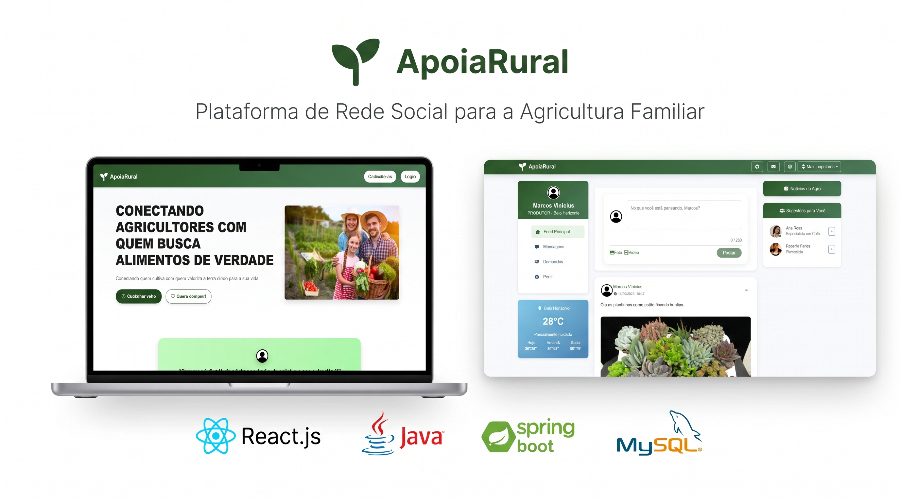

Olá, Mundo! Eu sou
Gabriel Nunes
|
Analista em Sistemas ERP realizando uma pós-graduação em AI Engineering e foco atual em Engenharia de Dados.

Analista em Sistemas ERP realizando uma pós-graduação em AI Engineering e foco atual em Engenharia de Dados.
Sou um Analista de Sistemas ERP e Desenvolvedor FullStack dedicado, combinando anos de experiência em suporte a sistemas corporativos e administração de bancos de dados com uma visão focada no futuro.
Minha trajetória começou na infraestrutura e suporte, o que me deu uma visão privilegiada e profunda de como o software se comporta em produção, redes e arquitetura de servidores. Evoluí para o desenvolvimento e sustentação de software, atuando com linguagens como C# (.NET), Java e Python, além de forte experiência na criação, manutenção e otimização de consultas em bancos de dados relacionais.
Atualmente, atuo na sustentação e melhoria contínua de sistemas empresariais críticos e estou em constante aprimoramento em engenharia de software e IA. Meu foco é atuar no desenvolvimento ponta a ponta (Backend e Frontend), unindo minha capacidade analítica de troubleshooting com a construção de aplicações escaláveis, seguras e eficientes.
Principais Tecnologias:

O ApoiaRural é uma plataforma de rede social criada com o objetivo de transformar o cenário da agricultura familiar.
Ver Detalhes
Projeto sendo desenvolvido
Ver DetalhesSustentação de sistemas ERP empresariais críticos e suporte à infraestrutura (ambientes Windows), com atuação direta na resolução de incidentes e operações de banco de dados.
Manutenção e tuning de consultas em clusters SQL Server e Oracle.
Suporte técnico nível 1 e 2, manutenção de redes e atendimento ao usuário final.
Acesse meu perfil profissional, veja recomendações, projetos e acompanhe publicações sobre Engenharia de Dados & IA.
Conectar no LinkedInCanal imediato para propostas, entrevistas e bate-papo técnico sem precisar abrir abas de e-mail.
Conversar no WhatsApp